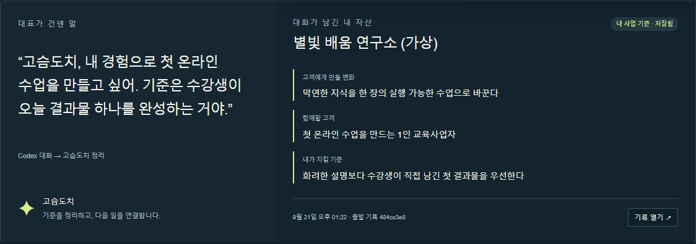
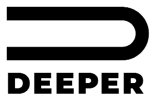
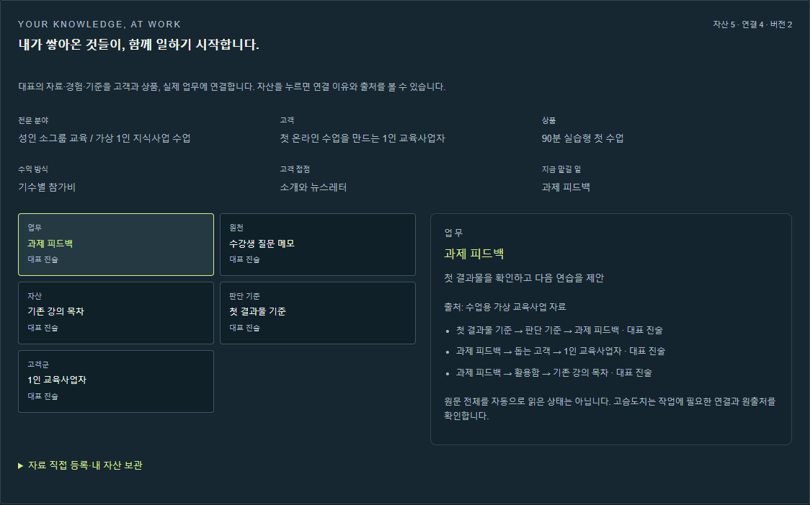
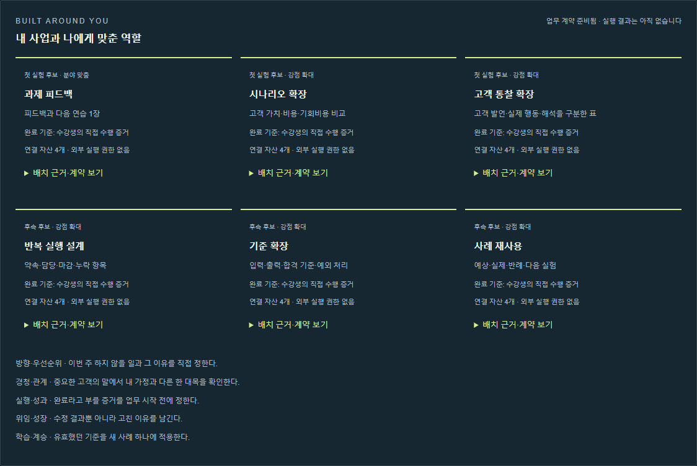

1. 내 까미노가 시작됩니다

이렇게 말해요“고슴도치, 내 경험으로 첫 온라인 수업을 만들고 싶어요. 수강생이 오늘 결과물 하나를 완성하게 하고 싶어요.”
얻는 결과사업 이름, 함께할 고객, 만들 변화, 지킬 기준이 출발 기록으로 남습니다.
확인할 것내 말과 다르면 고쳐 달라고 하세요. 출발 도장은 고객 검증 완료 표시가 아닙니다.

COMPOSTELA OS · 설치 뒤 첫 경험
아래는 별도 데이터 폴더에 만든 가상 교육사업을 실제 로컬 앱에 저장해 캡처한 화면입니다.



가상 교육사업의 첫 프로젝트를 한 장으로 정리한 실제 HTML 파일입니다.
첫 프로젝트 한 장 열기 ↗